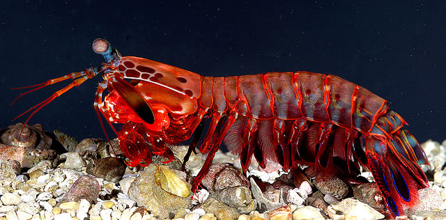
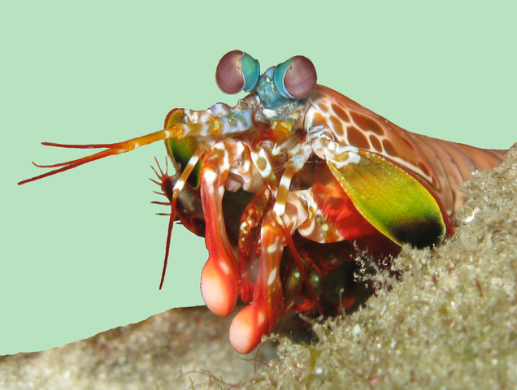

Facts About the Mantis Shrimp
What is it?
Mantis shrimp, or stomatopods, are carnivorous marine crustaceans of the order Stomatopoda, branching from other members of the class Malacostraca around 340 million years ago. Mantis shrimps typically grow to around 10 cm (3.9 in) in length, while a few can reach up to 38 cm (15 in). The largest mantis shrimp ever caught had a length of 46 cm (18 in); it was caught in the Indian River near Fort Pierce, Florida, in the United States. A mantis shrimp's carapace (the hard, thick shell that covers crustaceans and some other species) covers only the rear part of the head and the first four segments of the thorax. Varieties range in color from shades of brown to vivid colors, with more than 450 species of mantis shrimps being known. They are among the most important predators in many shallow, tropical and subtropical marine habitats. However, despite being common, they are poorly understood, as many species spend most of their lives tucked away in burrows and holes.
| Mantis shrimp | |
|---|---|
| Scientific name | Odontodactylus scyllarus |
| Kingdom | Animalia |
| Phylum | Arthropoda |
| Subphylum | Crustacea |
| Class | Malacostraca |
| Subclass | Hoplocarida |
| Order | Stomatopoda |
Interesting facts
A fierce predator

The mantis shrimp has two raptorial appendages on the front of its body. These accelerate with the same velocity as a gunshot from a twenty-two caliber rifle, and in less than three-thousandths of a second can strike prey with 1,500 Newtons of force.
To put this in perspective, if human beings could accelerate our arms at 1/10th that speed, we'd be able to throw a baseball into orbit.
Why so fast?
Their limbs move so quickly the water around them boils in a process known as supercavitation.
When these cavitation bubbles collapse it produces an undersea shockwave that can kill prey even if the mantis shrimp misses its target.
The force of these collapsing bubbles also produces temperatures in the range of several thousand Kelvins and emits tiny bursts of light. This effect is called sonoluminescence.
You're not welcome here
Aquariums don't typically house mantis shrimps because they tend to slaughter every other creature they share a tank with. And also because they can break aquarium glass.